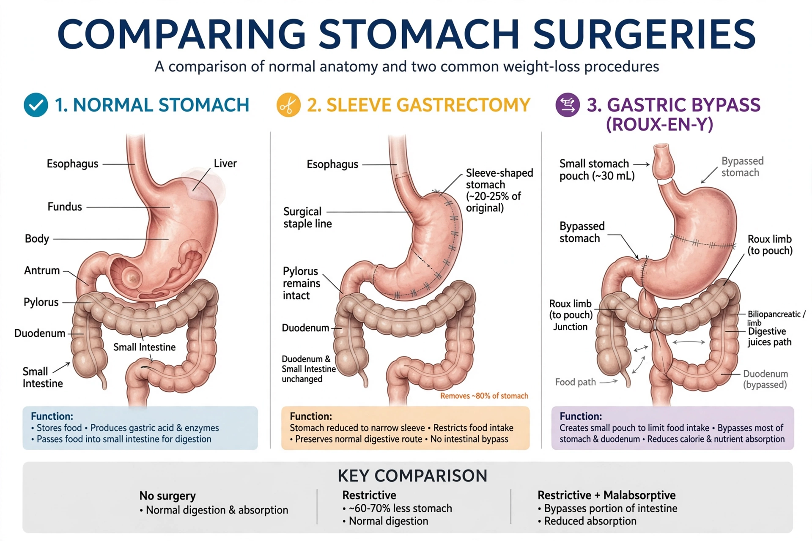

Bariatric surgery
Bariatric surgery (also known as metabolic surgery or weight loss surgery) is a medical term for surgical procedures used to manage obesity and related conditions. Long-term weight loss with bariatric surgery may be achieved through alteration of gut hormones, physical reduction of stomach size, reduction of nutrient absorption, or a combination of these. Standard of care procedures include Roux-en-Y gastric bypass, sleeve gastrectomy, and biliopancreatic diversion with duodenal switch, along with lifestyle treatment, medications (notably GLP-1 receptor agonists), and endoscopic therapies.
 | |
| Other names | Weight loss surgery, metabolic surgery |
|---|---|
| Specialty | General surgery, gastroenterology |
| Uses | Obesity, type 2 diabetes, metabolic syndrome |
| Common procedures | Roux-en-Y gastric bypass; sleeve gastrectomy; adjustable gastric band (historical); biliopancreatic diversion |
Medical uses
Bariatric surgery is generally recommended for people with a body mass index (BMI) of 40 or higher, or 35 or higher with obesity-related comorbidities such as type 2 diabetes, hypertension or obstructive sleep apnoea, when non-surgical measures have failed. The 2022 ASMBS/IFSO guidelines lowered the suggested thresholds, recommending surgery at BMI ≥35 regardless of comorbidity and consideration at BMI 30–34.9 with metabolic disease. Beyond weight loss, surgery frequently produces remission or major improvement of type 2 diabetes, an effect partly attributed to changes in gut hormones such as GLP-1 and ghrelin.
Procedures
Roux-en-Y gastric bypass
The surgeon creates a small gastric pouch and connects it directly to the mid-jejunum, bypassing most of the stomach and the duodenum. It combines restriction with mild malabsorption and strong hormonal effects.
Sleeve gastrectomy
Roughly 75–80% of the stomach is removed along the greater curvature, leaving a narrow tube or "sleeve". It has become the most commonly performed bariatric operation worldwide.
Other procedures
The adjustable gastric band, once common, has fallen out of favour due to modest long-term results and band complications. Biliopancreatic diversion with duodenal switch produces the greatest weight loss but carries higher nutritional risk. Endoscopic approaches, including intragastric balloons and endoscopic sleeve gastroplasty, occupy a less invasive niche.
Risks and outcomes
Modern perioperative mortality is low, on the order of 0.1–0.3%, comparable to laparoscopic cholecystectomy. Complications include anastomotic leaks, strictures, marginal ulcers, internal hernias, dumping syndrome and micronutrient deficiencies requiring lifelong supplementation and monitoring. Long-term studies, such as the Swedish Obese Subjects study, show sustained weight loss and reduced overall mortality compared with matched controls.
History
Weight-loss surgery began in the 1950s with intestinal bypasses; the jejunoileal bypass caused severe complications and was abandoned. Edward Mason developed the gastric bypass in the 1960s, and laparoscopic techniques in the 1990s transformed safety and uptake. Global procedure numbers reached roughly a quarter-million annually in the United States alone by the late 2010s.
See also
Categories: Bariatric surgery · Digestive system surgery · Obesity